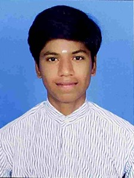

R.Mohanaprasanth

Objective:
To enhance my knowledge by implementing my skills, which helps to increase my experience and development of the MNC.
Education
- I had completed my school education at MGR Higher Secondary School
- Percentage:95
- Year:2023
- I graduated from Velammal Institute of technology with a B.tech Degree (AI&DS)
- CGPA:8.8
- Year:2027
Work Experience
HR at TCS:
- From 2028-2029.
- Conducted many interviews.
- Taught the new developers with AI tools.
Assistant Manager-(Zeus)
- From 2030-2034.
- Attended the meetings on behalf of my company.
- Was kind and loyal.
Skills
- Organizational skills:

- Hosting skills:

- Web Developing:
Awards and Certifications
- Best Fresher-September 2028
- Employer of the year-January 2032
Others
My Hobbies
Contact Details